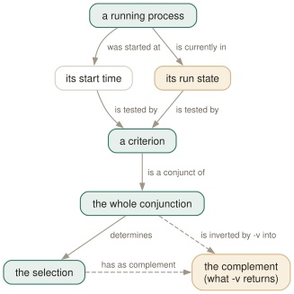

Day 05
Time, state, inversion
The newest, the oldest, the stuck — and what -v really negates.
By the end of today you can
- pick out the newest or oldest match, and say why
-nand-vcannot both be used - read a process's run state and select on it, including the states nobody mentions
- predict exactly which processes
pgrep -u you -v namereturns
Two facts the process table keeps for you
Yesterday's criteria were about identity, and identity does not change. Today's two are about the present moment: when a process started, and what it is doing right now. Both come free from /proc, and both let you write queries that would otherwise need ps and a sort.
Start time gives three flags. -n and -o reduce the selection to a single process — the most and least recently started — and -O takes a number of seconds and keeps everything older than that.
$ pgrep -o -l bash # the oldest shell on the machine
239195 bash
$ pgrep -n -l bash # the newest, which is usually the one asking
273471 bash
$ pgrep -O 3600 -u jhrcek -c . # mine, running for over an hour
144

pgrep -u you -v bash is not "your non-bash processes"; it is "everything that is not one of your bash processes", which is nearly the whole machine.Run states, and the two nobody mentions
-r selects on the kernel's run state — the same letter ps shows in its STAT column. The manual page offers "D,R,S,Z,…" and the ellipsis is doing a great deal of work, because on a modern Linux box those four account for barely half the table:
$ pgrep -c . # every process
612
$ pgrep -r S -c . # interruptible sleep
370
$ pgrep -r R -c . # actually running
0
$ pgrep -r I -c . # idle kernel threads
242
S- Interruptible sleep. Waiting for something, and can be signalled. Nearly every normal process, nearly all the time.
I- Idle. A kernel thread with nothing to do. Linux has reported these separately since 4.14 and the manual page has not caught up.
R- Running or runnable. Usually a very short list; on an idle machine, often empty.
D- Uninterruptible sleep — blocked in a syscall that cannot be interrupted. The state a failing disk or a hung NFS mount produces, and the reason a process can survive
kill -9. Z- Defunct: exited, but its parent has not reaped it. It holds a PID and nothing else.
Tandt- Stopped by a signal, and stopped by a debugger. Also selectable, also undocumented here.
The defunct are still in the table
A zombie is an exited process whose parent has not yet called wait. It has no memory, no threads and cannot run, but it still owns a PID and a /proc entry — so pgrep finds it, and pgrep(1) lists "Defunct processes are reported" under BUGS.
$ pgrep -x python3 -l
273405 python3
273406 python3
$ pgrep -r Z -a
273406 [python3] <defunct>
Two identical-looking lines, one of which is a corpse. Only -a or -r tells them apart — the [brackets] and <defunct> come from the command line being empty, not from anything pgrep adds.
What -v actually negates
The manual page gives -v four words: "Negates the matching." It is the most consequential four words in the page, because the thing it negates is not the pattern. It is the entire conjunction — every criterion you supplied, taken together.
The demonstration takes three commands. This machine has 616 processes, 5 of them bash, all 5 mine:
$ pgrep -c . # everything
612
$ pgrep -c bash # the bashes
4
$ pgrep -v -c bash # not-bash: 612 - 4, as expected
608
$ pgrep -u jhrcek -c . # everything of mine
149
$ pgrep -u jhrcek -v -c bash # 'mine, but not bash'?
608
That last number should be 145 — my 149 processes less my 4 shells. It is 608, identical to the run without -u at all, and the result contains PID 1, which belongs to root. The query pgrep answered was:
you asked for: NOT ( owned by jhrcek AND named bash )
you meant: ( owned by jhrcek AND NOT named bash )
By De Morgan the first is "not mine, or not a bash", which is satisfied by almost every process on the machine. The -u did not restrict anything; it went inside the negation along with the pattern.
Today's habit
When you catch yourself writing -v, stop and write down what you actually want in English. If the sentence has an "and" in it, -v will not do it, and the ten seconds you spend noticing that is the cheapest debugging you will ever do.
Tomorrow: what is underneath a process, and what is beside it — threads, which have their own names, and pidfiles, which have their own truth.
# Day 5: my long-lived processes. Anything unexpected here has leaked.
pgrep -O 86400 -u "$USER" -a
# Day 5: the ones a dying disk produces. Sample often - D is usually brief.
pgrep -r D -a
New vocabulary
Commands
| Command | Does |
|---|---|
pgrep -n -a firefox | The most recently started match, with its command line. |
pgrep -O 3600 -u $USER -a | Everything of yours that has been running for over an hour. |
pgrep -r D -a | Processes in uninterruptible sleep — the ones a dying disk produces. |
Options
| Option | Does |
|---|---|
-n, --newest | Keep only the most recently started match. |
-o, --oldest | Keep only the least recently started match. |
-O, --older | Keep matches started more than this many seconds ago. |
-r, --runstates | Keep matches in one of these kernel run states. A comma list. |
-v, --inverse | Return everything the query did not select — the whole query, not just the pattern. |
Drillsdo these in a real terminal, today
Self-check
Answer out loud first, then unfold.
You want "my processes, except the shells" and write pgrep -u $USER -v bash. You get back more processes than you own, including PID 1. Explain.
-v inverts the entire query, not the pattern within it. You asked for the complement of "owned by me AND named bash", and by De Morgan that is everything which is either not mine or not a bash — which is almost the whole process table, root's included.
On a machine with 612 processes, 4 of them bash: pgrep -u $USER -v -c bash returns 608, exactly the same as pgrep -v -c bash. The user criterion contributed nothing except a false sense of having restricted something.
There is no single invocation that expresses "mine but not bash". Filter afterwards — comm -23 <(pgrep -u $USER . | sort) <(pgrep -u $USER bash | sort) — or, far more often, reach for a sharper positive criterion instead of a negative one.
Why can -n and -v not be used together, and what is unhelpful about how pgrep tells you?
Because they contradict each other structurally. -n reduces the selection to a single process; -v replaces the selection with its complement. "The newest of everything that did not match" is a question nobody has needed, and procps declines to guess. pgrep(1) lists it under BUGS with the invitation "Let me know if you need to do this".
The unhelpful part is the diagnostic: you get the full usage message with no error line at all explaining which two flags conflict. Exit status 2, and a wall of text you have to diff against your command by eye.
A nightly job greps for stuck processes with pgrep -r D -a and has never reported anything, on a machine with known NFS problems. What should you check first?
That the job is running often enough. State D — uninterruptible sleep — is real but usually brief; a process is in it for the duration of one blocking syscall. A once-a-night sample will miss almost every occurrence even on a badly behaved mount.
The second thing to check is the letter. -r accepts anything: pgrep -r Q is not an error, it just silently matches nothing and exits 1, which is indistinguishable from "no stuck processes". A typo in that flag will never be noticed.
Your machine has 612 processes. pgrep -r S -c . says 370 and pgrep -r R -c . says 0. Where are the other 242?
Almost all of them are in state I, idle — kernel worker threads that Linux has reported separately from ordinary sleep since 4.14. pgrep -r I -c . on that machine returns exactly 242, and -r I,S accounts for all 612.
The manual page's "D,R,S,Z" is a sample, not the list. T (stopped), t (traced) and I are all selectable and none are mentioned. ps's own PROCESS STATE CODES section is the real reference.
Cheat sheet
pgrep -n NAME # newest match only } cannot be combined
pgrep -o NAME # oldest match only } with each other, or with -v
pgrep -O 3600 # started more than 3600 seconds ago
pgrep -r S,I # by run state, comma list. An invalid letter is SILENT.
#
# S interruptible sleep I idle kernel thread R running
# D uninterruptible Z defunct T/t stopped, traced
#
pgrep -v NAME # NOT(every criterion together) - not 'the others that match'
# pgrep -u me -v bash == pgrep -v bash. The -u is inside the negation.
# Zombies are reported like anything else: check with -a or -r Z.
Everything through Day 05
Commands
| Command | Does |
|---|---|
pgrep sshd | List the PID of every process whose name matches the ERE sshd. |
pgrep -u root sshd | Two criteria, AND-ed: owned by root and named sshd. |
pgrep -u root,daemon | One criterion, OR-ed: owned by root or by daemon. No pattern at all. |
pgrep 'systemd|cron' | One ERE, two alternatives. Two bare patterns would be an error. |
pgrep --version | Print the procps-ng version this course is checked against. |
pgrep -f 'python3 .*worker' | Match the full command line, so the interpreter's arguments count. |
pgrep -x systemd | Only processes named exactly systemd — not systemd-logind. |
pgrep -A -f myscript.sh | Match command lines, but ignore every ancestor of this pgrep. |
cat /proc/PID/comm | The 15-character name pgrep matches by default. |
tr '\0' ' ' < /proc/PID/cmdline | The full command line pgrep matches under -f. |
ps -fp $(pgrep -d, -x sshd) | The man page's own idiom: hand a comma list to ps. |
renice +4 $(pgrep chrome) | Word-splitting turns newline-separated PIDs into separate arguments. |
pgrep -a -Q -f worker | List command lines with argument boundaries preserved. |
pgrep -P $$ | Everything your current shell forked directly. |
pgrep -t pts/3 -a | Everything running on one terminal — the other window. |
pgrep -g 0 | Processes in pgrep's own process group; -s 0 does the same for the session. |
pgrep -n -a firefox | The most recently started match, with its command line. |
pgrep -O 3600 -u $USER -a | Everything of yours that has been running for over an hour. |
pgrep -r D -a | Processes in uninterruptible sleep — the ones a dying disk produces. |
Options
| Option | Does |
|---|---|
-c, --count | Print how many processes matched instead of their PIDs. |
--quiet | Print nothing; the exit status is the whole answer. Long form only. |
-f, --full | Match against the whole command line instead of the process name. |
-x, --exact | Require the pattern to match the whole string, not a part of it. |
-i, --ignore-case | Match case-insensitively. |
-A, --ignore-ancestors | Drop every ancestor of this pgrep from the result. The fix for -f in scripts. |
-l, --list-name | Print the process name after the PID. Still the 15-character name, even under -f. |
-a, --list-full | Print the full command line after the PID. |
-Q, --shell-quote | Shell-quote each argument in -a output, so boundaries survive. Undocumented. |
-d, --delimiter | Join the PIDs with this string instead of a newline. A trailing newline is still added. |
-u, --euid | Match on the effective user — the authority the process is acting with. |
-U, --uid | Match on the real user — who started it. |
-G, --group | Match on the real group. Name or number. |
-P, --parent | Match processes whose parent is one of these PIDs. |
-g, --pgroup | Match on process group. 0 means pgrep's own. |
-s, --session | Match on session ID. 0 means pgrep's own. |
-t, --terminal | Match on controlling terminal, named without /dev/. |
-p, --pid | Match only these PIDs — a filter, not a lookup. Undocumented. |
-n, --newest | Keep only the most recently started match. |
-o, --oldest | Keep only the least recently started match. |
-O, --older | Keep matches started more than this many seconds ago. |
-r, --runstates | Keep matches in one of these kernel run states. A comma list. |
-v, --inverse | Return everything the query did not select — the whole query, not just the pattern. |